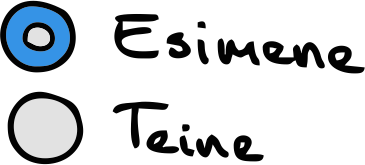
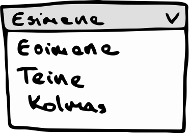
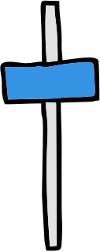
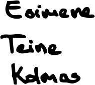
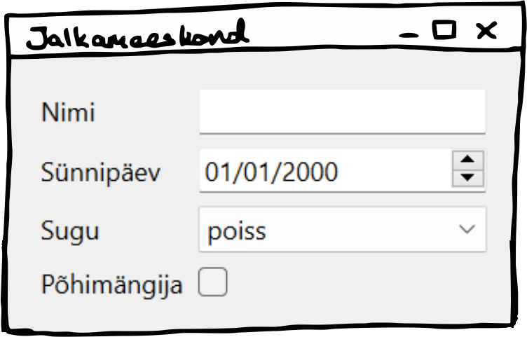
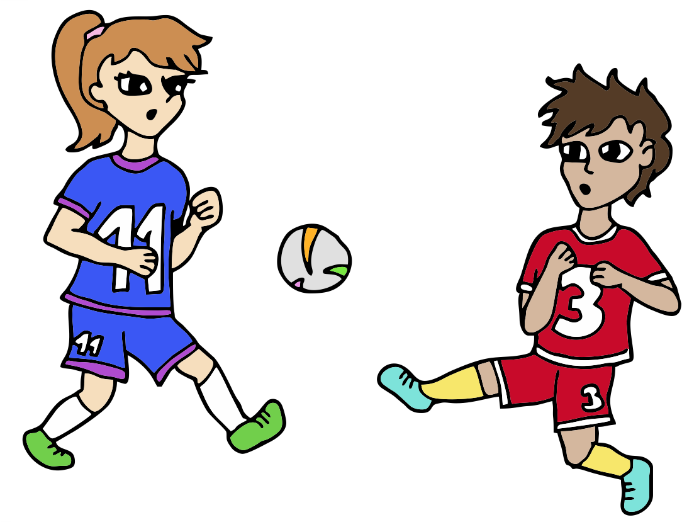
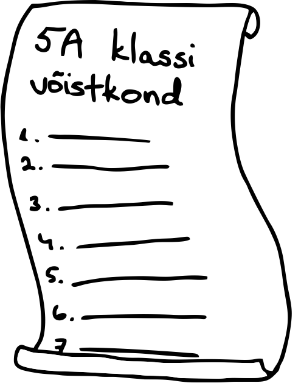
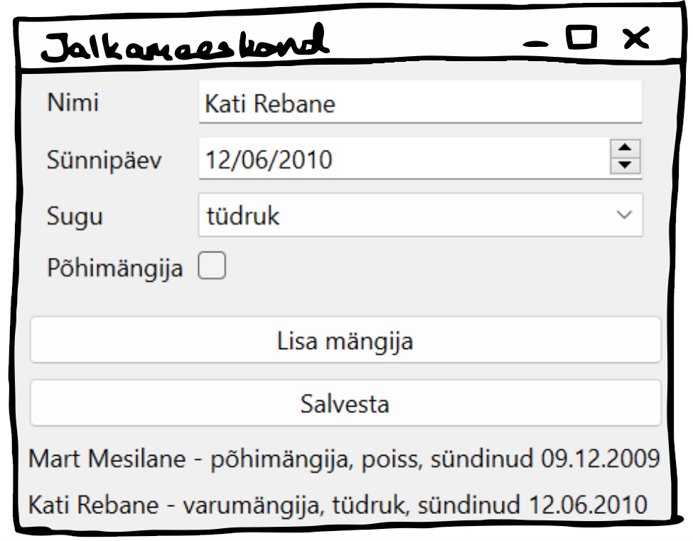
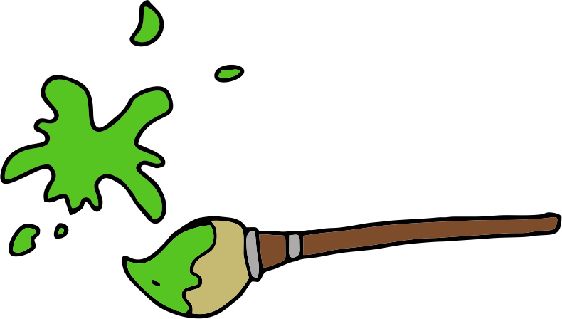
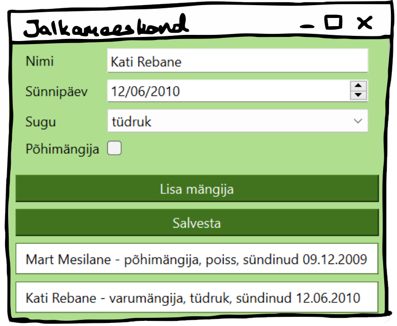

TÖÖLAUARAKENDUS
Mida selles peatükis õpime?
1. Mis on PyQt6?
2. Kuidas luua lihtsat töölauarakendust?
3. Milliseid vidinaid saab kasutada?
4. Kuidas vidinaid paigutada?
5. Kuidas lisada nuppe?
6. Kuidas töölauarakendust kujundada?
Lisaks veebirakendustele oled kindlasti kasutanud ka töölauarakendusi. Ka Thonny, mida ilmselt programmeerimiseks
kasutad, on oma iseloomult töölauarakendus. Selles peatükis vaatame, kuidas luua ise lihtsat töölauarakendust.
Töölauarakenduse jaoks hakkame kasutama tööriistakomplekti nimega PyQt. Täpsemalt
selle kuuendat versiooni PyQt6. See on üks populaarsemaid tööriistu Pythonis töölauarakenduste valmistamiseks,
sest see pakub palju võimalusi ja selle abil saab väga lihtsa vaevaga töölauarakenduse luua.
Paigaldamine käib täpselt samamoodi nagu pygame'i ja Flask'i puhul.
Otsingusse sisesta seekord lihtsalt PyQt6.
Kuidas luua töölauarakenduse akent?
Loome väikse rakenduse klassidevahelise jalgpallivõistluse jaoks meeskonna koostamiseks. Rakenduse kaudu saab lisada meeskonda mängijaid
ja lõpus need mängijad faili salvestada. Iga mängija jaoks küsime ta nime, sünnipäeva, soo ja kas ta on põhi- või varumängija.
Alustame lihtsalt tühja akna kuvamisest. PyQt rakendused koosnevad erinevatest vidinatest ja
paigutustest. Erinevad vidinad on näiteks teksti kuvamiseks mõeldud sildid, sisendi küsimiseks mõeldud tekstikastid, valikmenüüd jne.
Vidinate asukohad saab määrata erinevate paigutustega. Alustame kõigepealt täiesti tühjast aknast, seejärel vaatame, milliseid vidinaid ja
paigutusi on olemas.
Tühja akna kuvamiseks on meil vaja importida kaks asja: QApplication ja
QMainWindow. Esimene neist on klass rakenduse loomiseks ja teine põhiakna loomiseks. Oma programmis
loomegi kõigepealt rakenduse objekti. Konstruktorile anname argumendiks tühja järjendi. Selle järjendi abil saab tegelikult rakendusele
argumente ette anda, aga meil pole seda vaja.
Teiseks loome akna objekti. Aknale saame määrata näiteks pealkirja. Viimaks on vaja akent näidata, kutsudes selleks
välja akna meetodit show, ja rakendus käivitada meetodiga exec.
Lisame oma aknasse ka ühe vidina nimega QLabel. Seda vidinat kasutatakse siltide
jaoks ja selle
konstruktorile võime argumendiks anda teksti, mida soovime kuvada. Seejärel määrame ta oma akna keskele.
Nüüd peaks akna keskele ka sõna "Rakendus" ilmuma. QLabel on üks
võimalikke vidinaid, mida saame kasutada. Milliseid vidinaid on veel olemas?
Vidinad
Siin on toodud mõned enim kasutatavad vidinad. Mitut neist hakkame ka oma rakenduses kasutama.
| Vidin |
Seletus |
Näide |
Joonis |
| QCheckBox |
Märkeruut, kuhu saab linnukese teha. |
vidin = QCheckBox() |
|
| QRadioButton |
Valikuvariant ümmarguse nupukesega. Kasutatakse tavaliselt mitmekesi koos, nendest ainult üks saab korraga
valitud olla.
|
vidin = QRadioButton("Esimene")
teine_vidin = QRadioButton("Teine")
|

|
| QComboBox |
Rippmenüü valikutega. |
vidin = QComboBox()
vidin.addItems(["Esimene", "Teine", "Kolmas"])
|

|
| QLabel |
Silt teksti kuvamiseks. |
vidin = QLabel("Rakendus!") |
|
| QLineEdit |
Tekstiväli teksti sisestamiseks. |
vidin = QLineEdit() |
|
| QPushButton |
Nupp tekstiga. |
vidin = QPushButton()
vidin.setText("Vajuta mind!")
|
|
| QSlider |
Riba, millega saab libistades kindlast vahemikust arvu valida. |
vidin = QSlider()
vidin.setMinimum(0)
vidin.setMaximum(10)
|

|
| QSpinBox |
Numbriväli täisarvu sisestamiseks. Paremal ääres on nooled, millega arvu suurendada ja vähendada. |
vidin = QSpinBox() |
|
| QDoubleSpinBox |
Numbriväli ujukomaarvu sisestamiseks. Paremal ääres on nooled, millega arvu suurendada ja vähendada. |
vidin = QDoubleSpinBox() |
|
| QDateEdit |
Väli kuupäeva valimiseks ja muutmiseks. |
vidin = QDateEdit() |
|
| QTimeEdit |
Väli aja valimiseks ja muutmiseks. |
vidin = QTimeEdit() |
|
| QDateTimeEdit |
Kuupäevaväli koos kellaajaga. |
vidin = QDateTimeEdit() |
|
Paigutus
Nägime, milliseid vidinaid on võimalik rakenduses kasutada ja kuidas neid luua. Nüüd tuleb need kuidagi ka
rakendusse paigutada. Selleks kasutatakse erinevaid paigutuse objekte. Allolevas tabelis on toodud erinevad paigutuste variandid.
Igas näites paigutame järgmised kolm vidinat:
| Paigutus |
Seletus |
Näide |
Joonis |
| QHBoxLayout |
Elemendid paigutatakse üksteise kõrvale (H tähistab horisontaalset). |
paigutus = QHBoxLayout()
paigutus.addWidget(esimene)
paigutus.addWidget(teine)
paigutus.addWidget(kolmas)
|
|
| QVBoxLayout |
Elemendid paigutatakse üksteise alla (V tähistab vertikaalset). |
paigutus = QVBoxLayout()
paigutus.addWidget(esimene)
paigutus.addWidget(teine)
paigutus.addWidget(kolmas)
|

|
| QGridLayout |
Elemendid paigutatakse ruudustikku. Igale elemendile saame määrata ta rea ja veeru koordinaadid. |
paigutus = QGridLayout()
paigutus.addWidget(esimene, 0, 0)
paigutus.addWidget(teine, 0, 1)
paigutus.addWidget(kolmas, 1, 0)
|
|
| QStackedLayout |
Elemendid paigutatakse üksteise taha. Esimesena paigutatud element jääb kõige ette. |
paigutus = QStackedLayout()
paigutus.addWidget(esimene)
paigutus.addWidget(teine)
paigutus.addWidget(kolmas)
|
|
Üksikut vidinat luues saime selle lisada oma akna keskele meetodiga setCentralWidget.
Paigutust ei saa me niimoodi otse aknale lisada. Paigutuse lisamiseks saame luua üldise QWidget-tüüpi vidina ja
panna paigutuse selle külge. Seejärel saame selle vidina aknasse lisada.
Loome vormi mängija andmete küsimiseks
Meie rakendus peaks lubama kasutajal klassidevahelisel jalgpallivõistlusel osalevate mängijate andmeid sisestada.
Iga mängija kohta tahame teada nime, sünnipäeva, sugu ja kas ta on põhi- või varumängija. Proovime luua vormi, mille kaudu kasutaja saaks need
andmed sisestada.
Nime jaoks sobiks meile hästi QLineEdit, mille kaudu saab teksti sisestada.
Sünnipäeva puhul on tegemist kuupäevaga, seega meile võiks sobida QDateEdit. Kellaaeg pole meile siin oluline.
Soo valimiseks sobiks nii QRadioButton kui QComboBox, sest mõlemad
lubavad valida ühe etteantud valikutest. Kasutame siin QComboBox'i. Põhi- või varumängija jaoks sobiks
ka need variandid, kuid kasutame siin hoopis QCheckBox'i. Kui märkeruutu on linnuke tehtud, siis on tegemist
põhimängijaga, kui linnukest pole, siis varumängijaga.
Impordime vajalikud vidinad ja loome vastavad isendid. QComboBox'ile
paneme
valikuvariantideks "poiss" ja "tüdruk".
Hetkel veel midagi aknasse ei ilmu, kui rakenduse käivitame. Selleks peame oma loodud vidinad ka mõnda paigutusse lisama ja
paigutust aknas kuvama.
Lisaks sisendiväljadele võiksime kasutajale iga välja juures ka väikse vihje anda, mida sinna väljale sisestama peab. Iga
sisendiväli koos selgitava vihjega võiks olla eraldi real.
Vihje jaoks saame igal real kasutada QLabel vidinat. Siin sobiks hästi kasutada ruudustikku ehk QGridLayout'i.
Iga ruudustiku rea esimeses veerus on vastava rea vihje ja teises veerus sisendiväli. Vidina ruudustikku paigutamiseks kasutatakse meetodit
addWidget(), mille esimene argument on vidin, seejärel rea indeks ja kolmandaks veeru indeks.
Nüüd ilmub meie vorm aknas nähtavale. Küll aga märkame, et meie kood on juba päris pikk ja läheb ilmselt veel pikemaks.
Oleks hea kui saaksime seda kuidagi paremini organiseerida ja tõsta vormi joonistamise osa kuhugi eraldi. Eriti hea oleks, kui
saaksime moodustada sellest täiesti uue vidina, mida hiljem kasutada. Praktikas
kasutatakse päris palju sellist stiili, kus erinevad kasutajaliidese osad koondatakse uutesse, meie endi loodud vidinatesse.

Kuidas muuta vorm vidinaks?
Vidina loomine ei ole eriti keeruline. Peame vaid looma uue klassi, mis oleks mõne vidina alamklass ja ongi kõik. Võtame näiteks kõige
üldisema vidina QWidget ja loome uue klassi nimega Vorm, mis on QWidget'i alamklassi.
Seejärel lisame sinna isendiväljadena kõik meie vormi elemendid, mis enne olid tavalised muutujad. Kui soovid, võid luua selle klassi jaoks eraldi faili,
nagu tegime mängu luues. Lihtsuse mõttes kirjutame siin näites kõik ühte koodifaili.
Tasub tähelepanu pöörata meie uue klassi viimasele reale.
Varem lõime oma põhiprogrammi lõpus QWidget isendi ja lisasime sellele paigutuseks oma ruudustiku.
Nüüd konstuktoris me enam uut QWidget isendit ei loo. Meie klass ise on QWidget'i
alamklass, seega saame paigutuse otse oma klassi isendi külge panna.
Põhiprogramm on meil nüüd palju lühem:
Nüüd arendame oma rakendust edasi. Saame vormi kaudu kõik jalgpallimängija jaoks vajaliku info kokku korjata ning
peaksime selle info kuhugi salvestama. Selleks võiksime luua ka mängija jaoks klassi. See on nüüd täiesti tavaline klass, mis ei ole seotud
vidinatega.
Loome Mängija klassi
Loome klassi, mis aitaks meil hoiustada mängija infot: nime, sünnipäeva, sugu ja kas tegemist on põhi- või varumängijaga. Esimesed
kolm isendivälja võiks olla sõne-tüüpi ja viimane tõeväärtus. Lisaks võiks klassis olla meetod __str__, mis
aitaks mängija infot ilusti kuvada.
Proovi see klass kõigepealt ise valmis meisterdada. Kui jääd hätta või soovid oma klassi võrrelda siinse näitega, siis
vaata vihjet.

Nupud mängija lisamiseks ja mängijate salvestamiseks
Kasutaja saab ilusti läbi meie loodud vormi jalgapallimängija andmed sisestada. Nüüd võiksime lisada nupu, mille
abil saab uue mängija luua ja
lisada olemasolevate mängijate nimekirja. Selleks võiksime luua uue vidina klassi, millest saab meie rakenduse
põhiaken. Võimegi talle nimeks panna
Põhiaken. Põhiaknas kuvame kõigepealt oma vormi, selle all nuppu "Lisa mängija" ja omakorda selle all eraldi ridadel
lisatud mängijate andmeid.
Kuna see vidin on meil põhiakna eest, siis võime ta muuta QMainWindow alamklassiks. Sobiks ka
QWidget, kuid QMainWindow alamklassina saame ära
kasutada ka selle klassi omadusi, näiteks
aknale pealkirja lisamist. Kuna soovime erinevaid vidinaid üksteise all kuvada, siis sobib siin kasutada QVBoxLayout paigutust.
Võime konstruktoris määrata aknale pealkirja ja luua QVBoxLayout paigutuse. Loome ka
uue Vormi isendi ja lisame ta paigutusse.
Lõpuks tahame paigutuse ka oma aknasse lisada. Selleks saame kasutada meetodit setCentralWidget.
Kuna paigutust ei saa otse
sellele meetodile ette anda, siis peame ta mähkima mõne vidina sisse. Näiteks loome uue QWidget
isendi, seame talle
meetodiga setLayout paigutuse ja seejärel lisame selle vidina aknasse.
Nüüd, kus oleme ka põhiakna seadistamise tõstnud eraldi klassi, on meie põhiprogramm kohe eriti lühikeseks muutunud.
Jälgi ka, et kõik kasutatud vidinad ja paigutused saaksid imporditud. Hetkel peaks faili alguses import selline välja nägema:
Praegu peaks avanema täpselt samasugune pilt nagu enne Põhiaken klassi loomist. Järgmiseks lisame sinna aknasse ka uue nupu.
Uue nupu lisamiseks loome konstruktoris uue QPushButton isendi (ei tasu unustada seda ka importidesse lisamast).
Nupule saame teksti määrata meetodiga setText. Lisaks peaksime uue nupu oma paigutusse lisama. Kuna tahame, et nupp oleks
vormi all, siis tuleb jälgida, et kõigepealt saaks paigutusse vorm lisatud ja alles pärast seda nupp.

Nüüd on meil vormi all ilusti ka nupp olemas. Aga kui nuppu vajutada, siis hetkel ei juhtu veel midagi. Järgmiseks peaksime looma meetodi,
mida tahame nupu vajutusel välja kutsuda.
Selleks lisame oma Põhiaken klassi uue meetodi. Võime sellele nimeks panna lisa_liige. See
meetod peaks vormist kõik vajalikud andmed kokku korjama, looma nende põhjal uue mängija isendi ja lisama ta kuhugi mängijate nimekirja. Esimese sammuna võiksimegi
täiendada oma konstruktorit ja lisada sinna isendivälja mängijate järjendi jaoks.
Nüüd peame vaatama, kuidas erinevatest vidinatest sisestatud väärtused kätte saada. Alustame nimest, mis on meil
QLineEdit vidinas. Sellest vidinast saab sisestatud teksti kätte meetodiga text.
Vorm on meil salvestatud isendiväljale nimega vorm ja sellel vormi isendil on omakorda isendiväli
nimi. Seega nime saame kätte nii:
Järgmiseks on meil sünnipäev QDateEdit vidinas. Sealt saab kuupäeva kätte meetodiga
date, aga see kättesaadud kuupäev on QDate-tüüpi. Meile piisaks siin tavalisest sõnest.
Saame õnneks selle kuupäeva isendi muuta sõneks meetodiga toString. Sellele meetodile argumendiks võime anda
kuupäeva kuvamise mustri. Selles mustris "dd" tähistab päeva, "MM" kuud ja "yyyy" aastat. Näiteks kui tahame neid punktidega eraldatult, siis
võime anda argumendiks "dd.MM.yyyy".
Sugu oli meil rippmenüüst valitav ja selleks kasutasime QComboBox vidinat.
Kui soovime sealt kätte saada hetkel valitud teksti, siis selleks on meetod currentText.
Viimane vormis kasutatud vidin on QCheckBox, millel on kaks võimalikku olekut
– kas märgitud või mitte. Selle tõeväärtuse saab kätte meetodiga isChecked.
Korjame need väärtused oma vormist kokku ja anname Mängija konstruktorile argumendiks. Loodud mängija
lisame ka isendiväljale järjendisse.
Nii saame mängijaid luua ja oma järjendisse lisada. Kuid kasutajaliideses me lisatud mängijaid veel ei kuva. Õnneks pole
raske loodud mängijat ka kasutajaliidesesse lisada. Selleks võime lihtsalt luua uue QLabel isendi ja
lisada selle paigutusse. QLabel konstruktorile saame anda kuvatava teksti argumeniks ja meil sobib selleks hästi
Mängija meetodi __str__ tagastatud väärtus.
Need kaks rida võime lisada kohe oma meetodi lisa_liige lõppu. Nüüd peame vaid ka nupule teada andma, mis
meetodit nupule vajutades rakendada tuleks. Seda saab teha nii:
Päris suur osa programmi loogikast on meil nüüd olemas. Võiksime veel lisada nupu, mille abil saab lisatud mängijad ka tekstifaili salvestada.
Selleks võime lisada uue nupu praeguse "Lisa mängija" nupu alla. Proovi ise see nupp luua ja kirjutada ka vastav meetod. Kui jääd hätta, siis vaata vihjeid.

Kuidas rakendusele kujundust lisada?
Nüüd on meil töötav rakendus olemas. Proovime aga natuke oma akna ja vidinate värve muuta ja muud kujundust lisada.
Eelmises peatükis tutvusime natuke CSS-iga ja just CSS-i abil saame ka siin oma vidinaid kujundada. Meie rakendusel (QApplication)
on olemas meetod setStyleSheet, millele saame CSS-i sõnena argumendiks anda. Võimegi CSS-i kirjutada programmi sõnena sisse
või siis lugeda lihtsalt CSS-faili sisu sõnena oma programmi sisse. Lihtsuse mõttes kirjutame siin oma kujunduse otse koodi sisse.
Proovime kõigepealt oma QMainWindow vidinale uue taustavärvi lisada. Kui tahame muuta kõiki
ühte tüüpi vidinaid, siis saame CSS-is kirjutada vidina nime ja loogelistes sulgudes vidinale rakendatava kujunduse.

Sarnaselt saame kujundada ka teisi vidinaid. Näieks võime ka nuppude värve natuke muuta:
Mis saab aga siis, kui soovime ainult mõne üksiku isendi stiili muuta, mitte kõikide sama tüüpi isendite? Eelmises
peatükis nägime, et saame ise CSS-is stiiliklasse kirjeldada ja panna oma elementidele vastavad stiiliklassid külge. Täpselt sama saame teha ka siin.
Loome näiteks kujunduse nimega liige, mille tahame määrata ainult nendele QLabel
isenditele, mis hoiavad endas mängijate infot. Kui kirjeldame oma uut stiiliklassi, siis tuleb CSS-is selle nime ette ka punkt lisada:
Vidinale stiiliklassi lisamiseks saame kasutada vidinate meetodit setProperty.
Selle esimene argument on omadus, mida tahame lisada. Kui soovime lisada stiiliklassi, siis on selleks omaduseks "class". Teine argument on
omaduse väärtus. Meie puhul siis stiiliklassi nimi "liige".
Kui nüüd rakendust käivitad, siis peaks taust olema heleroheline, nupud tumerohelised valge tekstiga ja lisatud mängijad peaks olema
valge taustaga kastides. Soovi korral võid rakenduse enda maitse järgi ümber kujundada, proovida teistsuguseid värve ja ka muid CSS-i omadusi.

Allpool on toodud kogu meie lõpliku rakenduse kood.
Meie väike rakendus on nüüd valmis ja loodetavasti saime näha kuidas mõningaid PyQt vidinaid ja
paigutusi kasutada. Miks mitte proovida luua graafilist kasutajaliidest veel mõnele varem loodud programmile. Või mõelda välja mõni uus idee, mida
saaks graafilise kaustajaliidese abil teostada.
Sellega ongi meie õpik läbi. Ole hea ja võta hetk õpikule tagasiside andmiseks. Tagasiside põhjal
saame muuta õpiku paremaks ja huvi korral lisada ka uusi teemasid. Tagasisidet saad anda läbi
tagasisidevormi.